قص الجدران بالليزر: الحل الدقيق لفتحات المباني
تعرف على مميزات قص الجدران بالليزر ولماذا يعتبر الخيار الأفضل للحصول على فتحات دقيقة ونظيفة.
اقرأ المقال ←مجموعة من المقالات المفيدة حول قص الجدران بالليزر، قص الخرسانة، فتح الأبواب، وتوسيع النوافذ والدرايش.
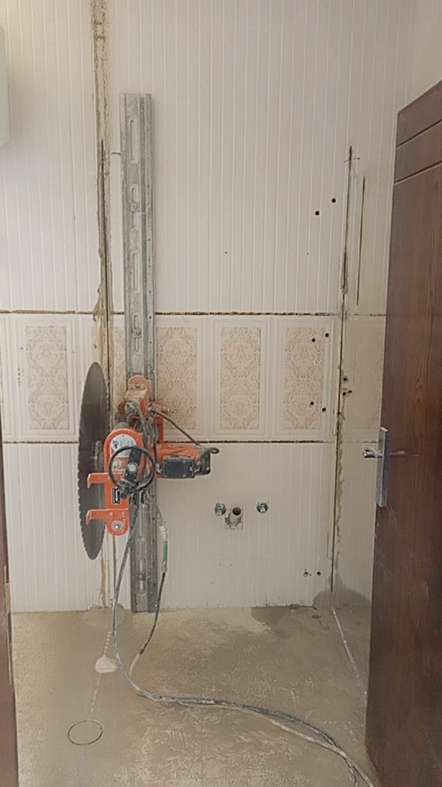
قص الجدرانتعرف على مميزات قص الجدران بالليزر ولماذا يعتبر الخيار الأفضل للحصول على فتحات دقيقة ونظيفة.
اقرأ المقال ←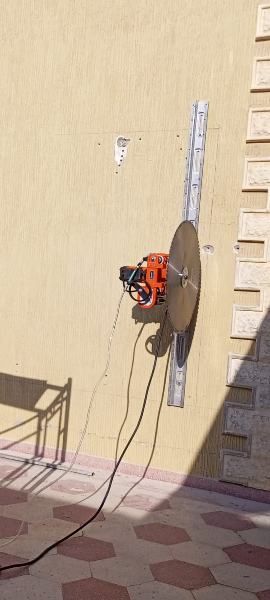
فتح الأبوابأهم العلامات التي توضح أن مشروعك يحتاج إلى فتح باب جديد وكيفية تنفيذ العمل بأمان.
اقرأ المقال ←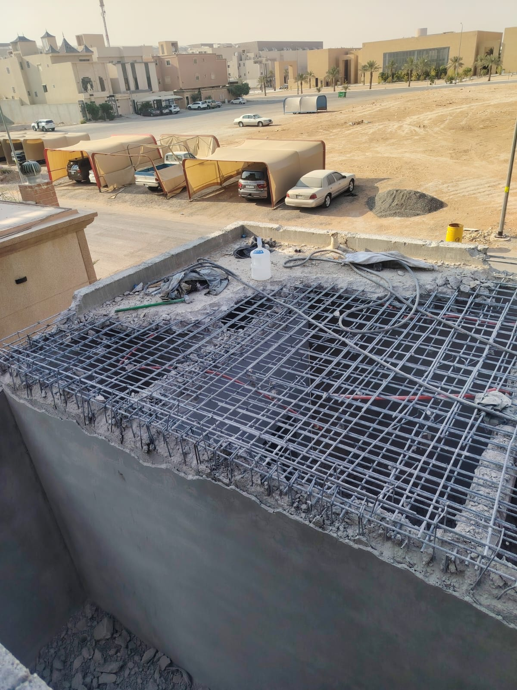
توسيع الدرايشكيف يساعد القص الاحترافي على توسيع الفتحات وتحقيق المقاس المطلوب بأقل قدر من الأضرار.
اقرأ المقال ←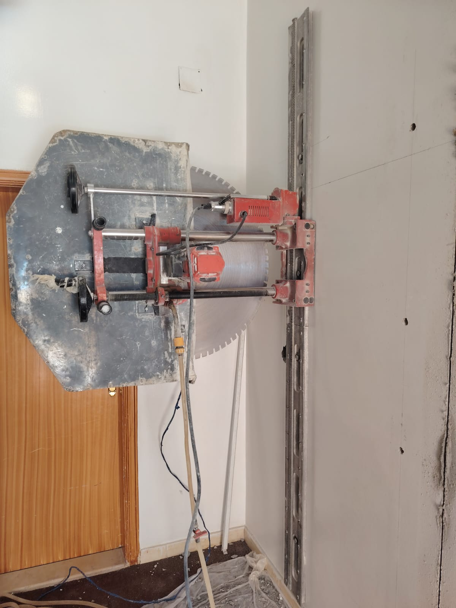
قص الخرسانةدليل مبسط حول قص الخرسانة المسلحة والمنشار الماسي وأهم استخداماته في المشاريع الإنشائية.
اقرأ المقال ←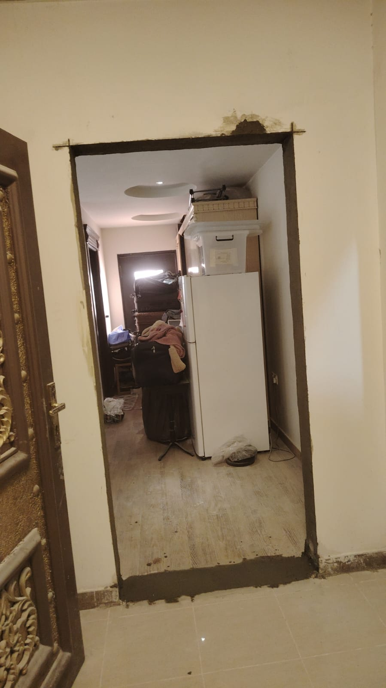
معلومات مهمةمقارنة عملية بين الدقة والسرعة والنظافة في القص بالليزر وبين الطرق التقليدية.
اقرأ المقال ←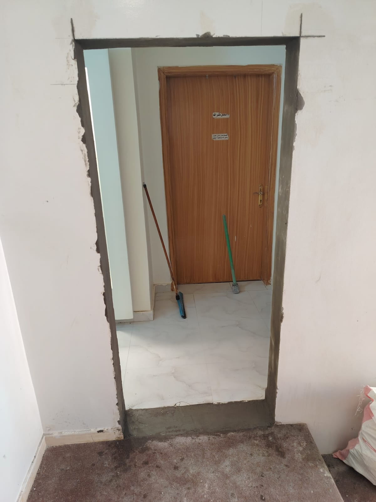
نصائحأهم المعايير التي يجب التأكد منها قبل اختيار فريق متخصص لتنفيذ أعمال القص.
اقرأ المقال ←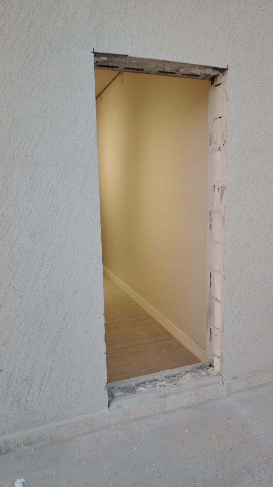
السلامةتعرف على طرق القص الحديثة التي تقلل الاهتزازات وتحافظ على العناصر المحيطة بموقع العمل.
اقرأ المقال ←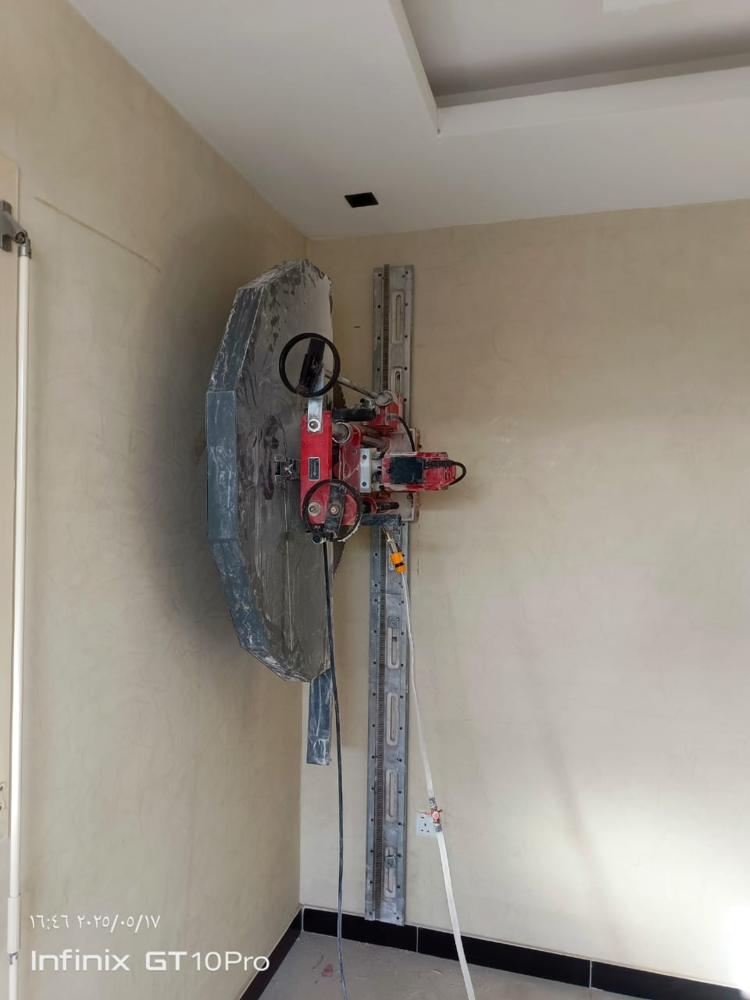
إرشاداتخطوات بسيطة تساعد على تسريع العمل والحفاظ على الموقع مرتباً وآمناً.
اقرأ المقال ←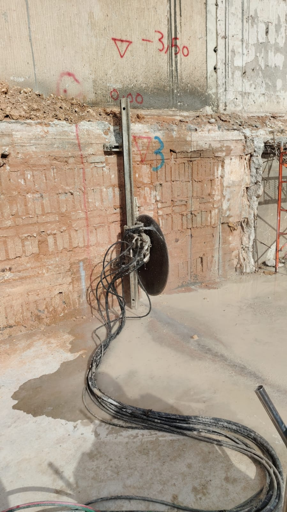
خدماتتنفيذ فتحات التكييف والتهوية بدقة مع الحفاظ على المقاسات المطلوبة في المخططات.
اقرأ المقال ←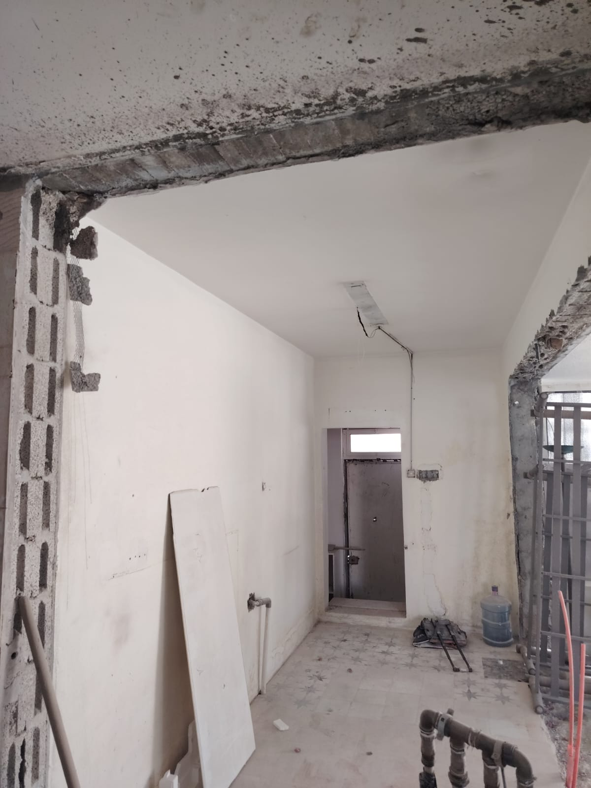
نصائحلماذا يعتبر التخطيط والقياس الدقيق أهم خطوة قبل بدء أي عملية قص أو فتح؟
اقرأ المقال ←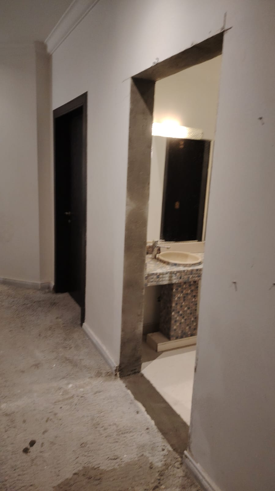
مشاريعحلول عملية للمحلات والمكاتب والمشاريع التجارية التي تحتاج إلى تعديلات سريعة ودقيقة.
اقرأ المقال ←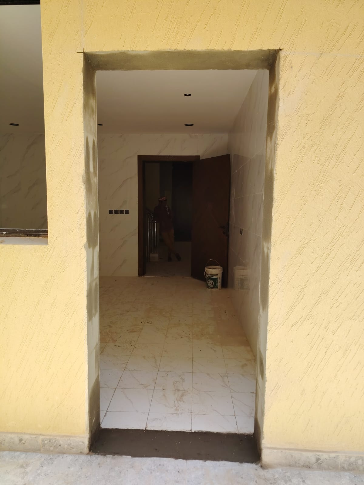
ترميمكيف يمكن تنفيذ التعديلات الإنشائية أثناء الترميم مع تقليل الفوضى والوقت الضائع.
اقرأ المقال ←